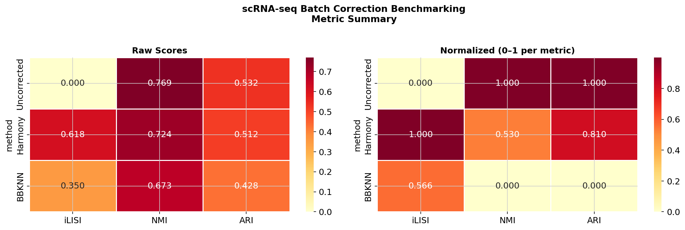
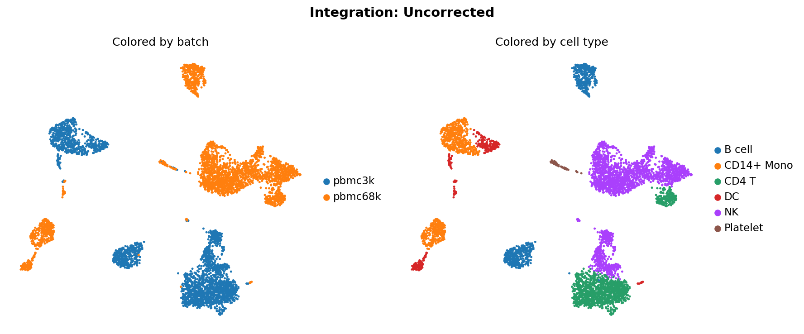
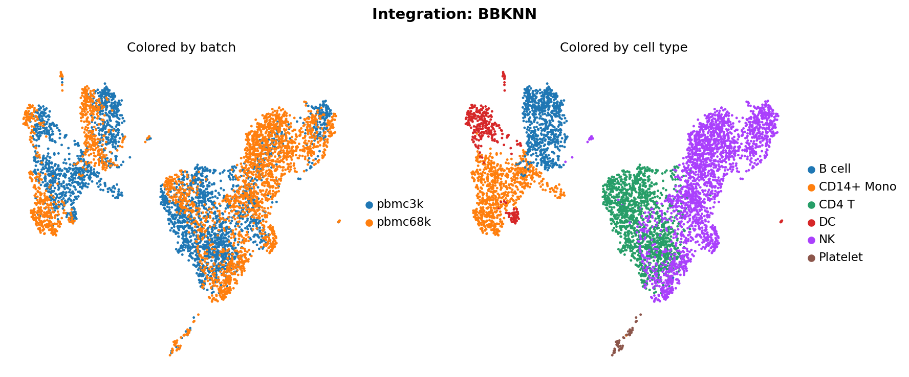
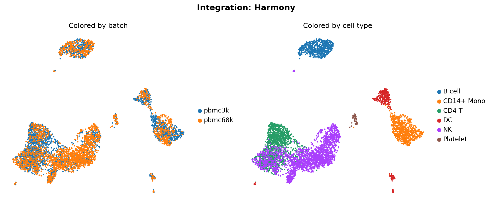
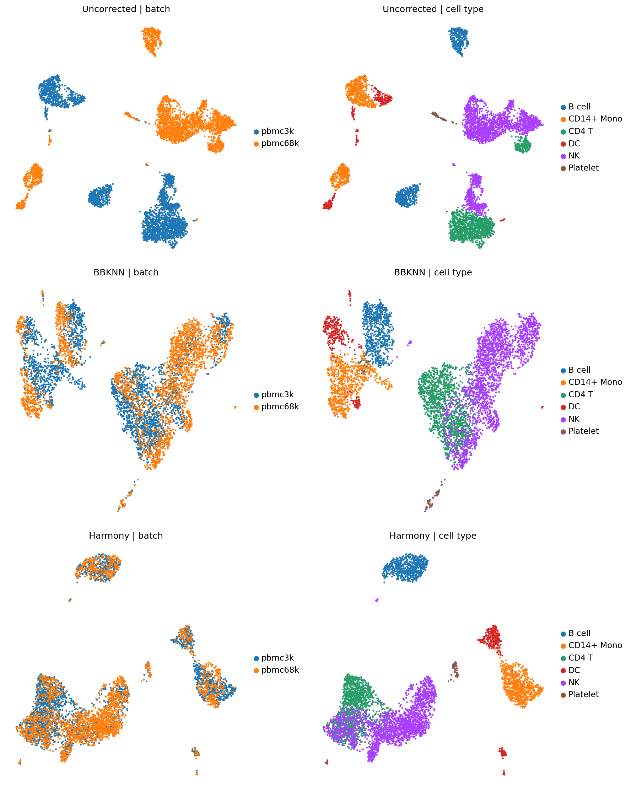

PBMC 3k PBMC 68k Methods: Uncorrected, BBKNN, Harmony
| method | NMI | ARI | iLISI |
|---|---|---|---|
| Uncorrected | 0.7694 | 0.5323 | 0.0000 |
| Harmony | 0.7241 | 0.5125 | 0.6177 |
| BBKNN | 0.6730 | 0.4279 | 0.3497 |





Generated by scrna-batch-benchmark pipeline · Metrics: iLISI (batch mixing), NMI & ARI (biological conservation vs cell type labels)